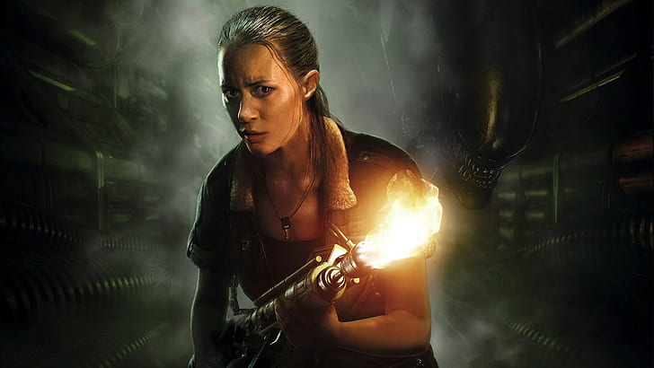
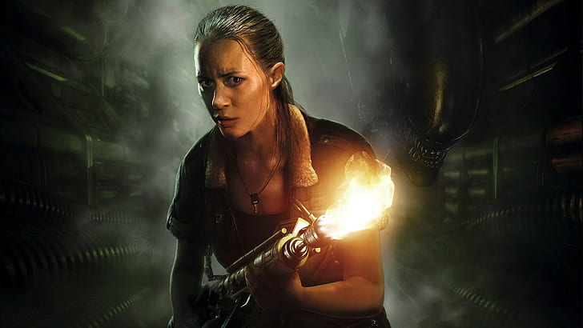

Alien: Isolation é um jogo de survival horror e furtividade em primeira pessoa lançado em 7 de outubro de 2014 desenvolvido pela Creative Assembly e publicado pela SEGA para PlayStation 3, PlayStation 4, Xbox 360, Xbox One e PC. Portado para Linux / SteamOS e OS X que também foram desenvolvidos pela Feral Interactive e lançados em outubro de 2015. Um porte adicional para o Nintendo Switch da Feral Interactive foi lançado em dezembro de 2019.
"Presa na estação e aterrorizada por humanos e alienígenas, ela deve proteger-se usando todos os meios necessários. Na estação espacial Sevastopol, onde cada passo pode ser o último de Amanda Ripley, a missão se torna uma luta pela sobrevivência..."
 
